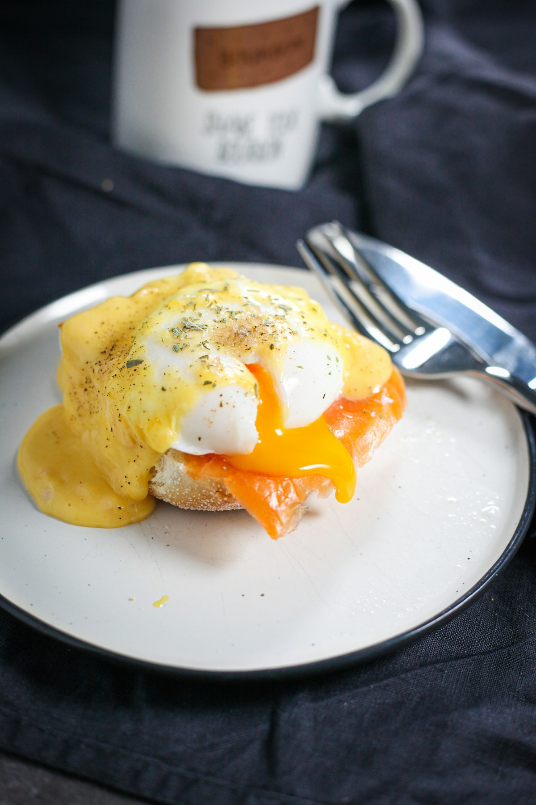
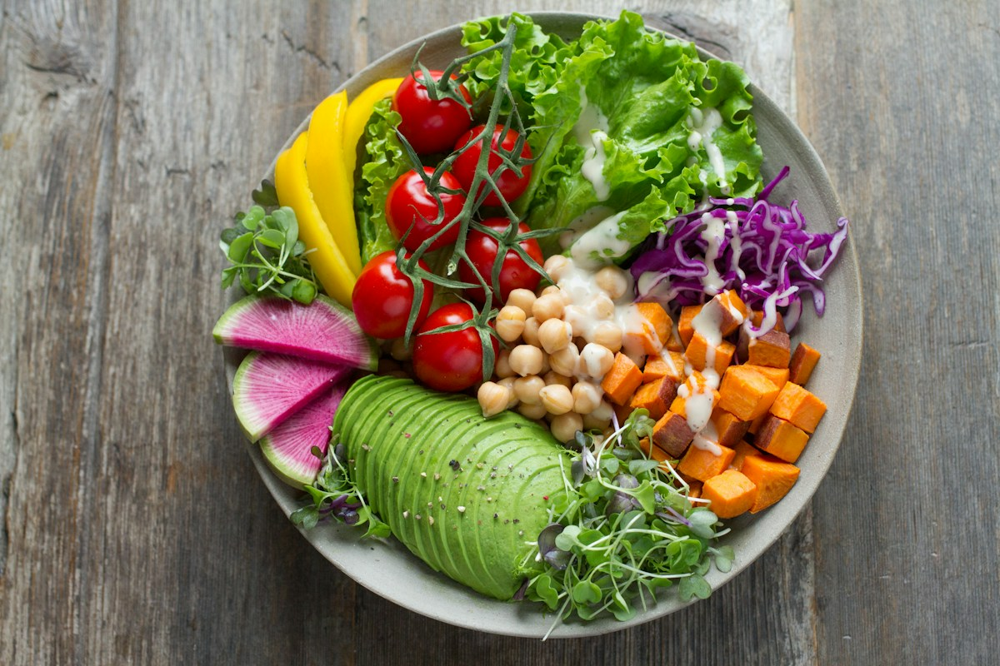
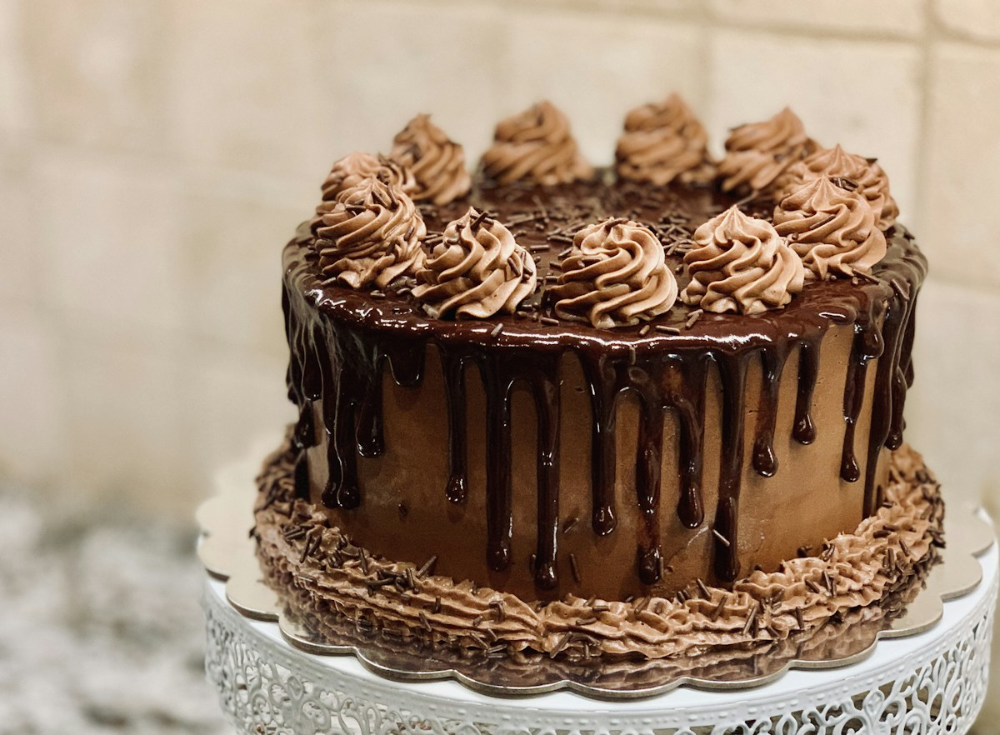

Todas las recetas
Aquí encontrarás las recetas paso a paso.
Tortilla de patatas

Ingredientes
- 4 huevos
- 3 patatas medianas
- 1 cebolla (opcional)
- Aceite de oliva y sal
Preparación
- Pela y corta las patatas y la cebolla.
- Cocínalas en una sartén con aceite hasta que estén tiernas.
- Bate los huevos, mézclalos con las patatas y añade sal.
- Vierte la mezcla en la sartén y cocina por los dos lados.
Ensalada César

Ingredientes
- Lechuga
- Pollo a la plancha
- Picatostes
- Queso parmesano
- Salsa César
Preparación
- Lava y corta la lechuga.
- Cocina el pollo a la plancha y córtalo en tiras.
- Mezcla la lechuga con el pollo, los picatostes, el queso y la salsa.
Bizcocho de chocolate

Ingredientes
- 200 g de harina
- 150 g de azúcar
- 3 huevos
- 100 g de chocolate
- 100 ml de leche
Preparación
- Calienta el horno a 180 grados.
- Mezcla los huevos con el azúcar, la leche y el chocolate derretido.
- Añade la harina y mezcla todo.
- Hornea durante unos 35 minutos. Comprueba que está hecho antes de sacarlo.